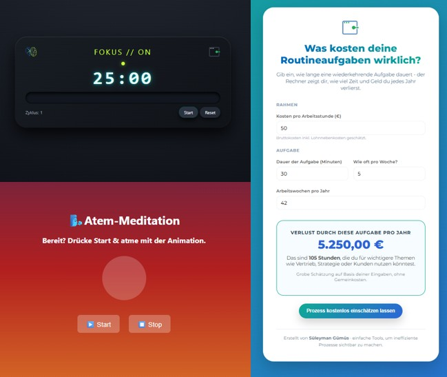

All in One Projekt - Lean & Prozessoptimierung
Interdisziplinäres Optimierungsprojekt für mehrere Montagebereiche mit Fokus auf Lean-Methoden,
Ergonomie, Layoutplanung und REFA-Analyse.
Methoden: Lean Management, REFA, Layoutplanung
Projektbericht (PDF)

100 Days of Code - Lernreise
Tägliche Dokumentation meines Lernfortschritts auf GitHub mit Mini-Projekten und Features rund um
HTML, CSS, JavaScript, Python, FastAPI und GitHub Pages.
Technologien: HTML, CSS, JS, Python, FastAPI, GitHub
GitHub-Repository
Trading Bots - Fobix & Foborix
Zwei automatisierte Trading-Bots in Python mit unterschiedlichen Strategien zur Marktanalyse und
Entscheidungsfindung,
dokumentiert in einem Projektbericht.
Technologien: Python, Algorithmen, Datenanalyse
Projektbericht Fobix & Foborix
ToDo Web-App
Stilvolle Aufgabenliste mit HTML, CSS und JavaScript. Verwaltung von Haupt- und Unteraufgaben direkt
im Browser,
Speicherung lokal, inspiriert vom Cyberpunk-Stil.
Technologien: HTML, CSS, JavaScript, LocalStorage
Live-Demo
öffnen
SQL & Java - Datenbankprojekte
Sammlung praxisnaher SQL-Projekte und Java-Backends, die reale Szenarien modellieren und zentrale
Konzepte
relationaler Datenbanken abbilden.
Technologien: SQL, PostgreSQL, Java, JDBC
Repository SQL &
Java
Lernplattform: Einstieg in die Programmierung
Webseite für Einsteiger ohne Vorkenntnisse mit kostenlosen, deutschsprachigen und
anfängerfreundlichen
Inhalten zum Einstieg in die Programmierung.
Technologien: HTML, CSS, JavaScript
Lernplattform
besuchen